Glintsmith
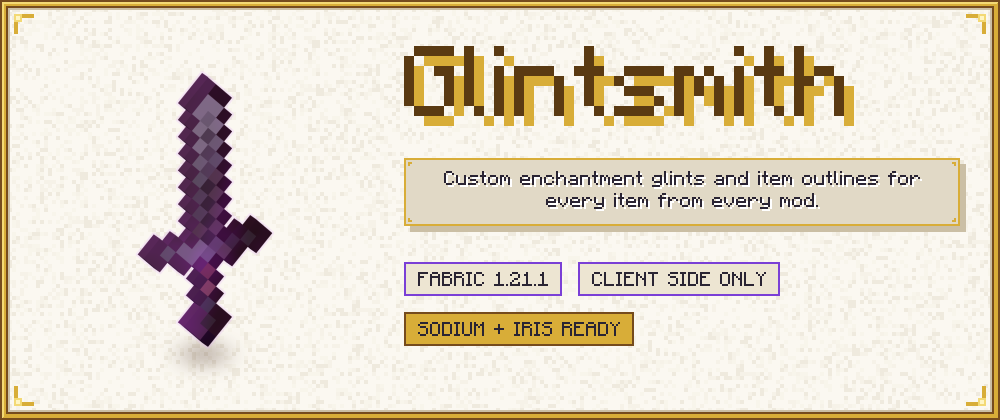
Item outlines, custom enchantment glints and a fix for the gaps in item models, for every item from every mod, in one Fabric mod for Minecraft 1.21.1.
Glintsmith works on what the game really draws, so there are no item whitelists and no per-item resource-pack overrides. A sword from a mod, a shield, a dropped stack and an item in a frame get the same treatment as vanilla tools. Set it up in one screen in the game, in English or German.
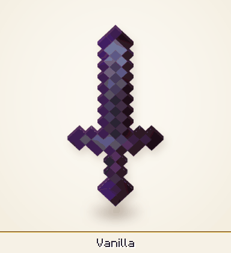
What it does
Outlines for every item. The outline is computed from the item's real rendered shape, so flat items, 3D models, shields, tridents and the items of other mods all get a clean outline. Worn armor and worn elytra are outlined too; that is on by default and can be switched off. The outline is depth aware: where a wall or a block is in front of the item, the outline is hidden. It was checked in game on vanilla items and on items of advancednetherite, eternal_starlight, cataclysm and immersive_armors.
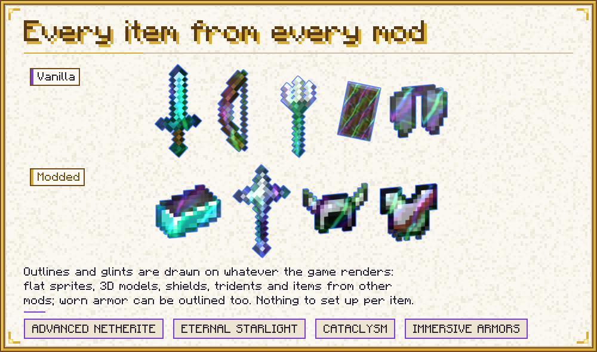
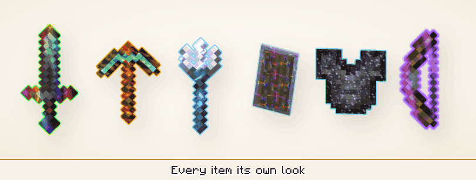
Outlines that fit your look. Colours can be static, rainbow, pulse, gradient (up to 16 colours) or taken from the enchantments on the item, with a colour of its own for every enchantment. Thickness (0.5 to 16 screen pixels, and each place can have its own), softness, opacity and distance fade are settings. By default the outline is proportional: the thickness is what you see on the item in your hand, and every other item gets an outline in proportion to its size on screen, so far items get thinner bands and inventory icons a thin line instead of a thick glow. A minimum width keeps small and far items outlined. With Proportional off, a thickness has the same width in screen pixels in the world, in your hand and in the menus, and it can optionally scale with the window size. A low-durability alert makes the outline pulse towards a warning colour when an item is nearly broken, and "Only my items" leaves other players' items alone.
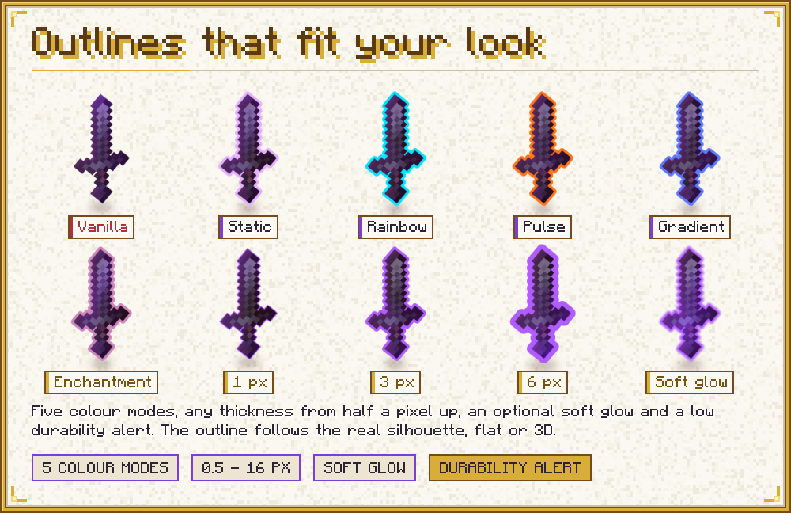
Outlines wherever an item is drawn. First-person hand, third-person held items of players and mobs, dropped items, item frames, worn armor (this includes worn elytra) and items in the inventory and other menus are on by default. Each place has its own switch.
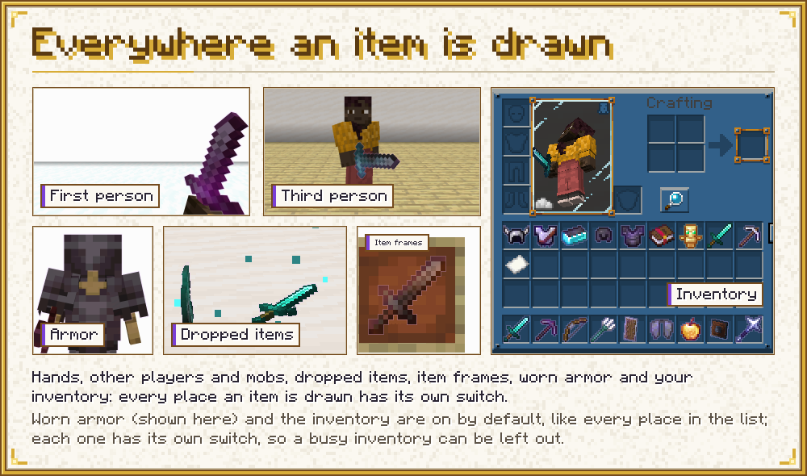
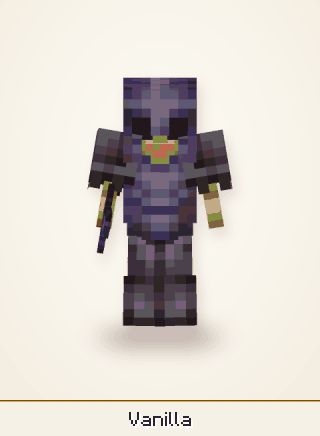
Your own enchantment glint. Four layers, items, armor, entities and the GUI, each with its own settings and each can be turned off. Pick the vanilla glint, one of the twelve generated presets (rainbow, aurora, fire, frost, sparkle, gold and void, which are soft streaks like the vanilla glint in other colours, and the more detailed inferno, nebula, starlight, opal and storm), a PNG of your own from the config folder (file:<name>.png), or a texture from a resource pack. Add a tint, change speed, scale, strength and rotation. The tint can follow the enchantments of the item. The presets are generated by the mod, so no third-party art is included, and their brightness is kept near the vanilla glint: the glint is added on top of the item, so a texture that is bright everywhere would wash the item out. The game's own Glint Speed and Glint Strength sliders still count.
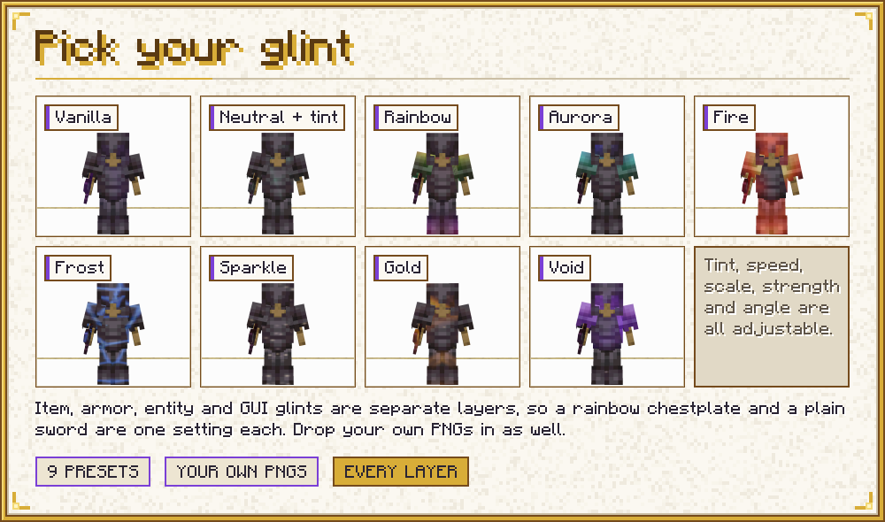
A fix for gaps in item models. Some flat item models show thin seams and gaps between their faces (Mojang bug MC-73186), which the vanilla glint leaves visible. Glintsmith scales the UV shrink on the block atlas, grows and moves the side faces of generated items, and can build the sides from contiguous pixel runs only. Set it to off, automatic or custom. Automatic slightly widens the side faces to close the corner cracks, and it turns itself off when the mod Model Gap Fix (modelfix) is installed, because that mod already closes the seams. Custom still applies next to it, on top of that mod's own changes. In game, automatic mode closed the step-corner cracks without slivers.
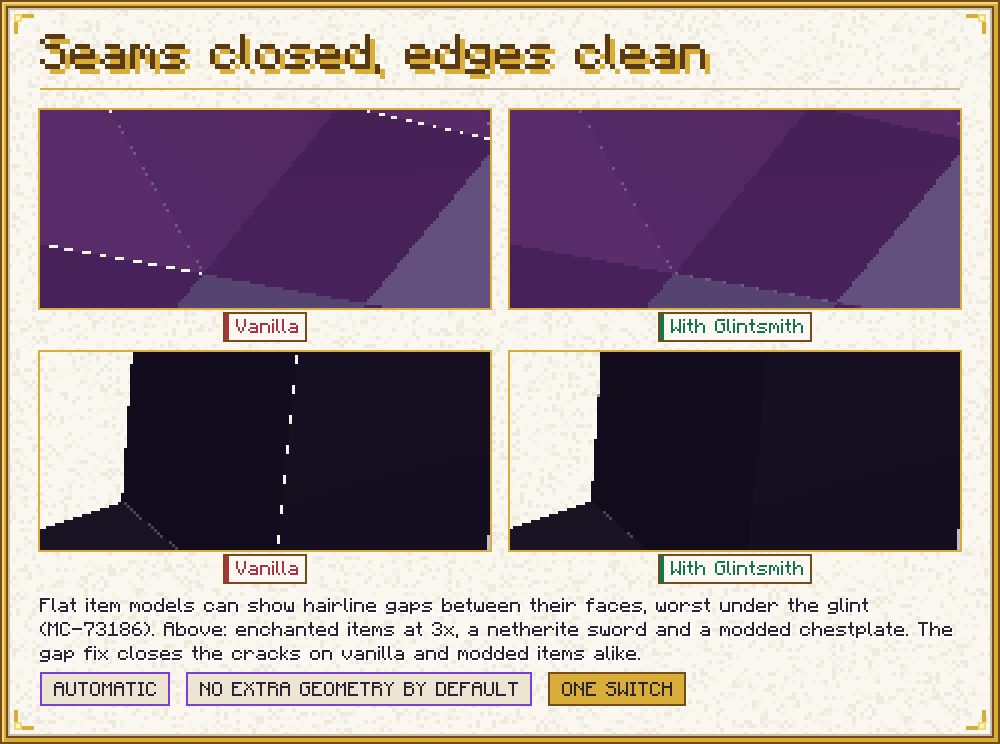
Rules for exactly the items you pick. A rule matches by item id, tag, mod, wildcard or negation, with an exception list, and optionally by enchantment, by enchanted or not, and by the place the item is drawn in. It can override the outline and the glint. Later rules override earlier ones, so a "deny" is a rule placed after the broader one. A fresh config contains two examples: a pale outline for the Totem of Undying, and no outline on enchanted books.
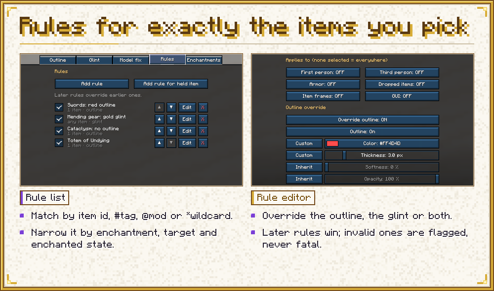
Everything in one screen. The settings screen uses vanilla widgets and has tabs for outlines, glint, model fix, rules and enchantment colours, a colour picker, and a tooltip on every setting. It opens from Mod Menu, with /glintsmith, or with a key. The settings are one JSON file, config/glintsmith.json, which is read again while the game runs.
See it while you set it up. Next to the options, a live preview shows the item in your main hand as it looks in first person, with the settings you are changing, before you save. It follows every change at once, including unsaved edits in the rule editor and the colour picker. Drag to turn the item, right click to reset the view, and a strip under the panel switches between your held item and a sample enchanted netherite sword. Short notes say why something is not shown, for example outlines off, a shader pack or an empty hand. It was checked in game with the held enchanted item.
A look from the first start. A fresh config comes with a look already set: a static light purple outline (thickness 7.5 px, opacity 25 %) on held, dropped and framed items, worn armor and items in the GUI, and the neutral glint with a light purple rainbow tint on all four layers (items, armor, entities and the GUI). Existing config files keep their values. The Reset tab button puts a tab back to these values; to get the vanilla glint back, turn off "Custom glint" on the Glint tab or set the texture of a layer to vanilla.
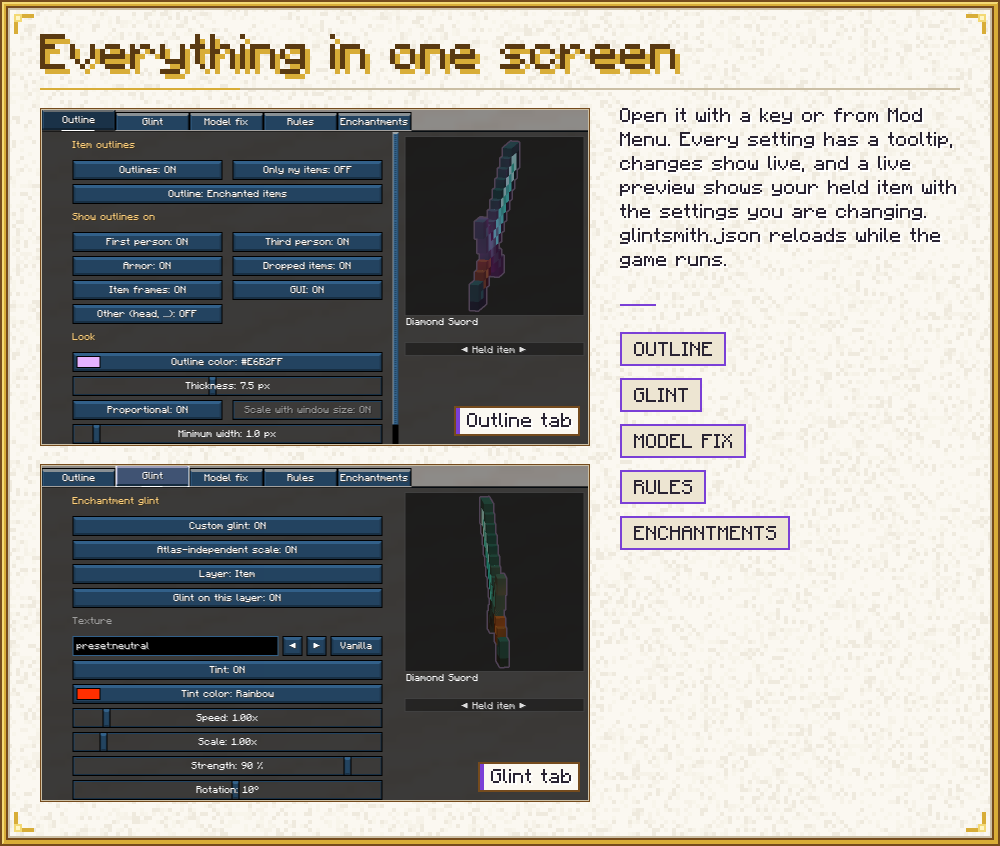
Sodium and Iris
Glintsmith is made to run with Sodium and Iris. With Iris and no shader pack selected, outlines and glint work as in vanilla rendering, and custom glints show everywhere, including in the world (armor, held items of other entities, item frames, dropped items). With a shader pack:
- Outlines in the world are turned off, because they need the scene depth that the shader pack changes.
- Outlines on the item in your hand stay on by default, and the arm hides them correctly. They can be switched off ("Hand with shader pack").
- Outlines in the GUI work.
- "Off with shader packs" turns all outlines off while a pack is active.
- The glint keeps the vanilla look in the world and in your hand, and is customised in the GUI.
Checked in game with Sodium 0.8.13 and Iris 1.8.14-beta.1, and with the shader pack Complementary Unbound with Euphoria Patches: no crash, and the settings screen shows a hint about shader packs. Fabulous graphics was tested in game without a shader pack: held items, item frames, dropped items, occlusion, stained glass, water, rain and GUI outlines are all correct.
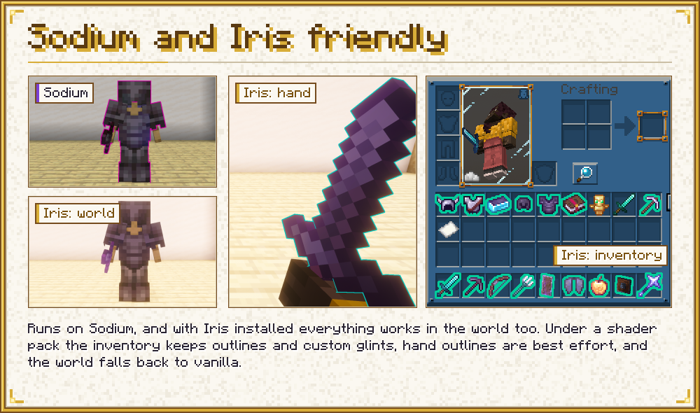
If an error happens in the outline, glint or gap fix code, that feature switches itself off for the session and logs it once, and the game keeps rendering the vanilla way.
How it compares
Checked on 2026-10-17 against the public pages and repositories of each project. Where a page does not say, the table says so; it does not mean the feature is missing.
| Glintsmith 2.0.2 | Custom Glow Enchantment Outline (mod) | Model Gap Fix (mod) | Rainbow Enchantment Glint (resource pack) | Enchantment Outlines (resource pack) | |
|---|---|---|---|---|---|
| What it does | Outlines, glint, gap fix | Outline on enchanted held items and the Totem of Undying | Gap fix | Rainbow glint on enchanted items | Outline on enchanted tools, 3D bows and maces |
| Which items | Every item of every mod; rules choose | Vanilla weapons, tools, shields and the totem by default; more items can be added by id, modded ones included | Block and item models | All enchanted items | Described as tools; the page does not mention modded items |
| Where outlines are drawn | Hand, held items of players and mobs, dropped items, item frames; worn armor, elytra and GUI (each place has its own switch) | Held items, first and third person | not applicable | not applicable | Item models, through CIT |
| Armor | Optional, on by default | Not listed; asked for in an open issue | not applicable | not applicable | not listed |
| Allow and deny | Rules with allow and except lists by id, tag, enchantment, mod | Whitelist; a blacklist is asked for in an open issue | not applicable | not applicable | not applicable |
| Colours | Static, rainbow, pulse, gradient, per enchantment; per rule | Colour picker, RGB mode; separate settings for tools and totem | not applicable | Rainbow | One fixed colour; the page points to another pack for other colours |
| Through walls | Hidden by depth test | Not stated on its pages | not applicable | not applicable | not applicable |
| Shader packs | World outlines off, hand and GUI work | Lists Iris as compatible | not applicable | not stated | Page says compatible with most shader packs |
| Enchantment glint | Presets, own PNG, resource-pack textures, tint, speed, scale, strength, rotation, per layer and per rule | No | No | One look for all enchanted items; the page has no settings | No |
| Gap fix | Yes: UV shrink, side faces, modes, settings | No | Yes: removes texture zooming; an extra step for 2D items is Forge only, per its page | No | No |
| Settings | In-game screen with live preview, JSON with live reload, commands | In-game screen (F7) | None on its page | None (resource pack) | Resource pack options |
| Versions and loaders | Fabric, Minecraft 1.21.1 | Fabric, Forge, NeoForge; 1.19.2 to 26.x | Fabric, Forge, NeoForge, Quilt; 1.18.1 to 1.21.10 | 1.19 to 1.20.1 | 1.19.3 to 26.x; CIT Resewn needed below 1.21.4 |
Glintsmith is narrower in one respect: it supports one loader and one Minecraft version, where the projects above reach more of both. It is also new, and the others have had many more players test them.
Sources, as read on 2026-10-17: the Modrinth, CurseForge and GitHub pages of Custom Glow Enchantment Outline (MoubaEZPZ/custom-glow-enchantment-outline, issues 1 and 3), the Modrinth page and GitHub repository of Model Gap Fix (MehVahdJukaar/modelfix-multi), and the Modrinth pages of Rainbow Enchantment Glint and Enchantment Outlines (glowing-glints) with its CurseForge page.
Requirements
- Minecraft 1.21.1, Fabric Loader, Java 21
- Fabric API
- Optional: Mod Menu (config button), Sodium, Iris, ImmediatelyFast
Client side only. Install it on your client; it does nothing on a server.
Compatibility notes
- Sodium 0.8.13 works. The log has one expected Sodium warning that
TeeVertexConsumerdoes not support optimized vertex writing; it is harmless. - ImmediatelyFast: HUD batching works with GUI outlines. An outlined GUI item flushes the batch before its outline is drawn, so the hotbar, the items and the counts are drawn and outlined as usual (checked with ImmediatelyFast 1.6.15). Custom glints work with it too: in the first-person hand, in the world (without Iris), and in inventories, menus and the hotbar (checked with ImmediatelyFast 1.6.15).
- First-person animation mods like Punchy keep the hand outline and the first-person glint rules (checked with Punchy 2.8f, main hand and offhand).
- A mod that replaces the vanilla glint render types itself can win over Glintsmith's glint, or the other way round. Use one of them.
- Items that never go through the game's normal item rendering (
ItemRenderer.render) are not outlined. Mods that only batch the drawing of GUI items, like ImmediatelyFast, are not affected. - Big block atlases (for example 8192 x 4096 px in large modpacks): item glints are textured through the item's own UVs on the block atlas, like vanilla, so in such a pack an item covers only a few texels of a preset. The glint scale now adapts to the atlas by itself: the option "Atlas-independent scale" (Glint tab, on by default) reads the size of the block atlas after every resource reload and keeps the vanilla pattern density for items in hand, on the ground, in item frames and in the GUI, so Scale 1.00 looks right in any pack. Armor and entity models use their own textures and are not changed. If you lowered Scale for a large atlas in 1.0.0, set it back to 1.00. Checked in game in a pack with an 8192 x 4096 px atlas.
- Model Gap Fix (
modelfix) can stay installed. Glintsmith's automatic mode stays off while it is present. In custom mode the settings stack on top of it, and precise spans are inactive. This is covered by unit tests; it was not tested in game for 1.0.0.
Performance
Frames without an outlined item do almost no outline work. One measurement, on one test scene and one machine (no shader pack): three identical windows without the mod gave 656, 470 and 531 fps, and with the mod 496, 643 and 587 fps. The cost of the outlines is within the run-to-run noise of that scene. This says nothing about other scenes or machines.
Commands and keys
/glintsmithopens the settings./glintsmith reloadreadsconfig/glintsmith.jsonagain and lists repairs./glintsmith toggleswitches all outlines on or off.- Two keys in the controls list, "Open Glintsmith settings" and "Toggle item outlines", both unbound by default.
Put your own glint PNGs in config/glintsmith/glints/ (lower case names, up to 1024 x 1024 px).
Credits and licence
Custom Glow Enchantment Outline by Moubarack, Model Gap Fix by MehVahdJukaar and the Rainbow Enchantment Glint and Enchantment Outlines resource packs were looked at for what they do. Glintsmith contains no code, texture or data of them. The gap fix is a new implementation of the general technique, not a copy of the GPL-3.0 code of Model Gap Fix. The glint presets are generated by the mod. Mod and logo by Navrelis.
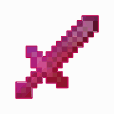
MIT licensed. Glintsmith is not affiliated with Mojang, Microsoft or the authors of the projects named above.
Source and issue tracker: https://github.com/navrelis/Glintsmith